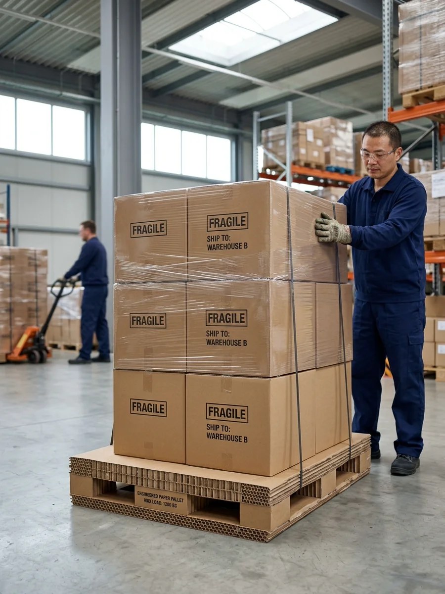

Dasen PackagingYour Trusted Packaging Business Partner
Paper pallet solutions for light shipment handling, recyclable transport packaging, and targeted logistics applications.
Paper pallets help reduce transport weight while supporting handling and palletized shipment requirements.
We support paper pallet projects for transport packaging, mixed product shipments, and lighter logistics applications where appropriate.

Ideal for light shipment loads, recyclable packaging solutions, and targeted transport programs.
Paper pallets for targeted shipment planning and transport-support applications.
Lightweight pallet solutions that help reduce overall shipment weight where appropriate.
Paper pallets used with cartons, corrugated packaging, and protective paper structures.
Paper pallets are first evaluated for suitability, rather than treated as a default replacement for standard pallets.
Product weight, stacked carton count, and total unit load are key checkpoints before evaluating a paper pallet solution.
Forklift access, warehouse movement, export handling, and pallet turnover requirements impact the practicality of the format.
Weight reduction, recyclable packaging, and one-way shipment programs are key reasons to consider paper pallets.
The pallet layout should be reviewed alongside carton dimensions, stacking plan, and shipment stability.
We will review pallet size, load requirements, stacking needs, and carton coordination before determining if a paper pallet is appropriate.